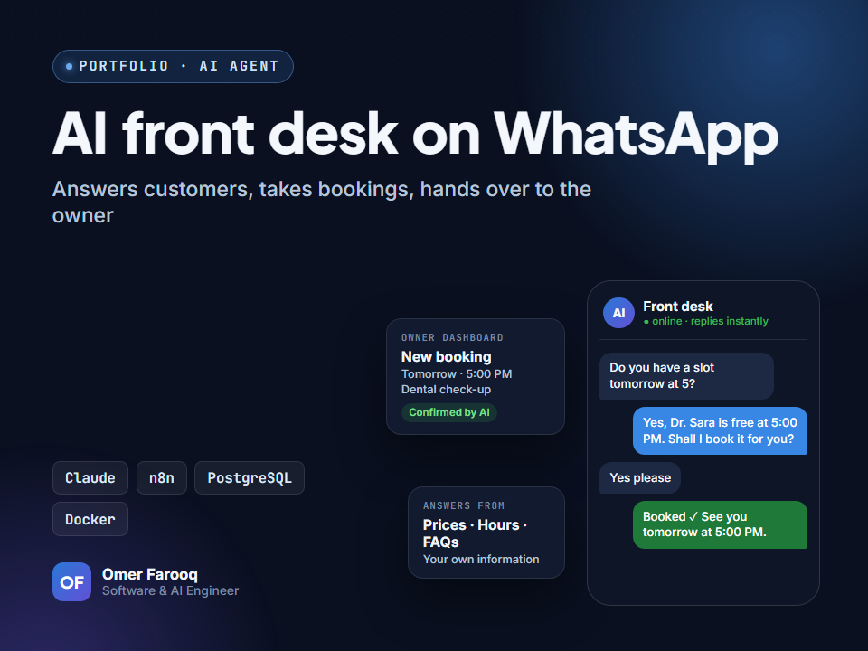
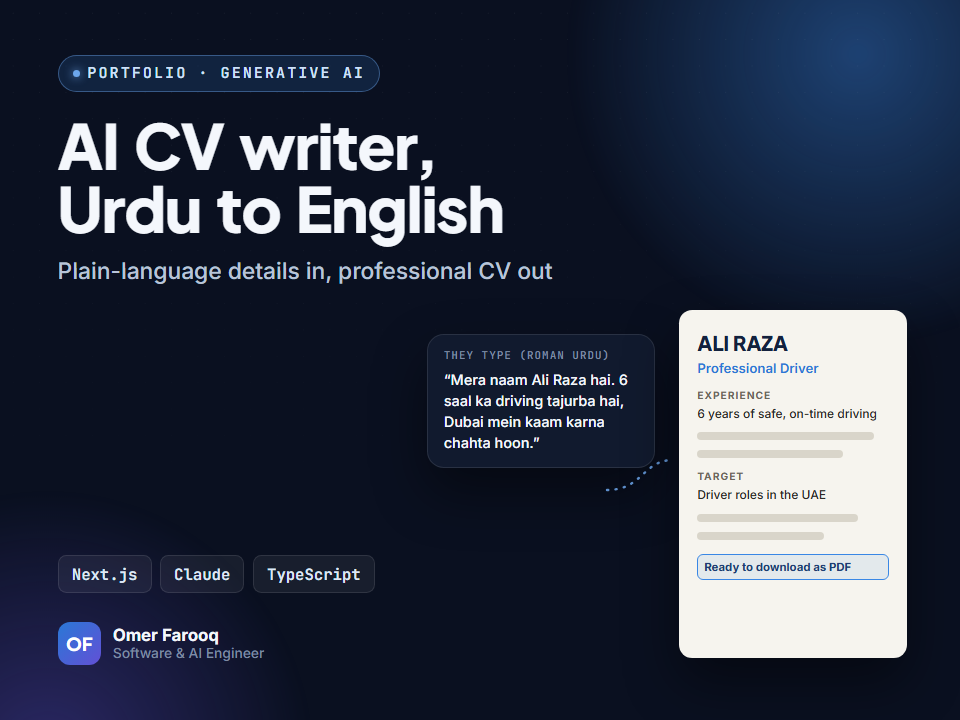
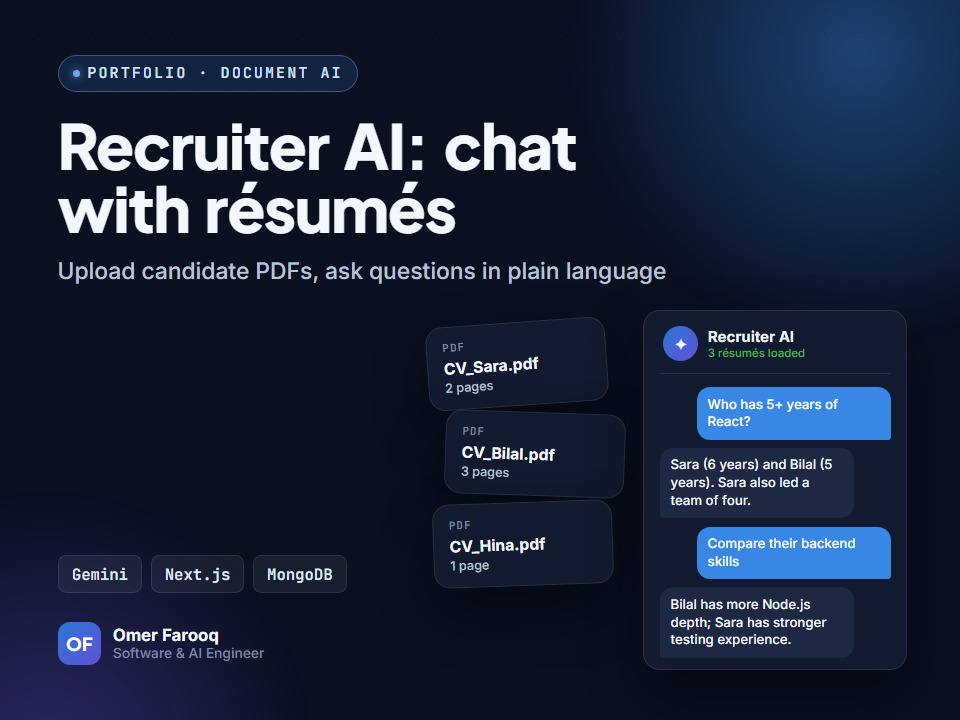
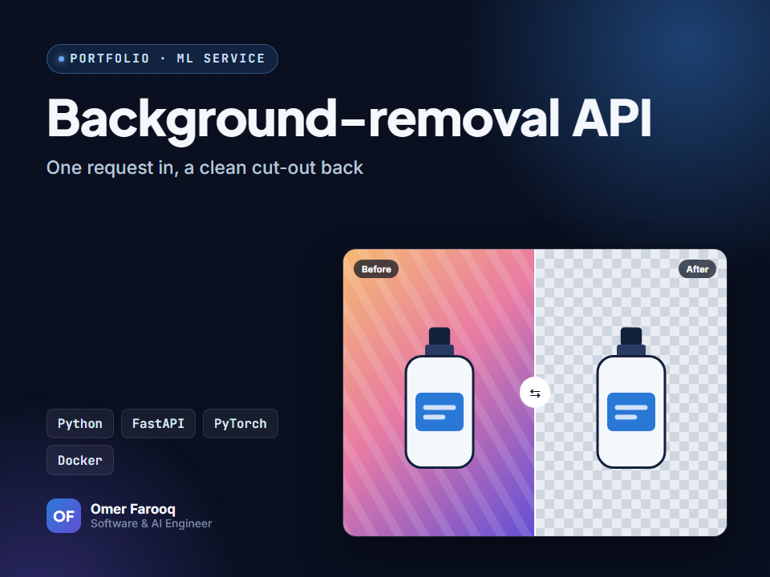
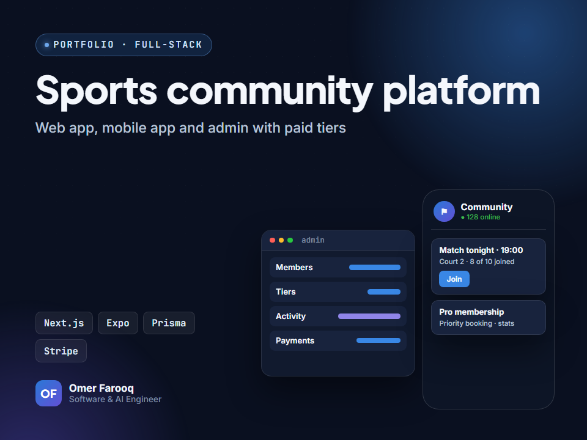
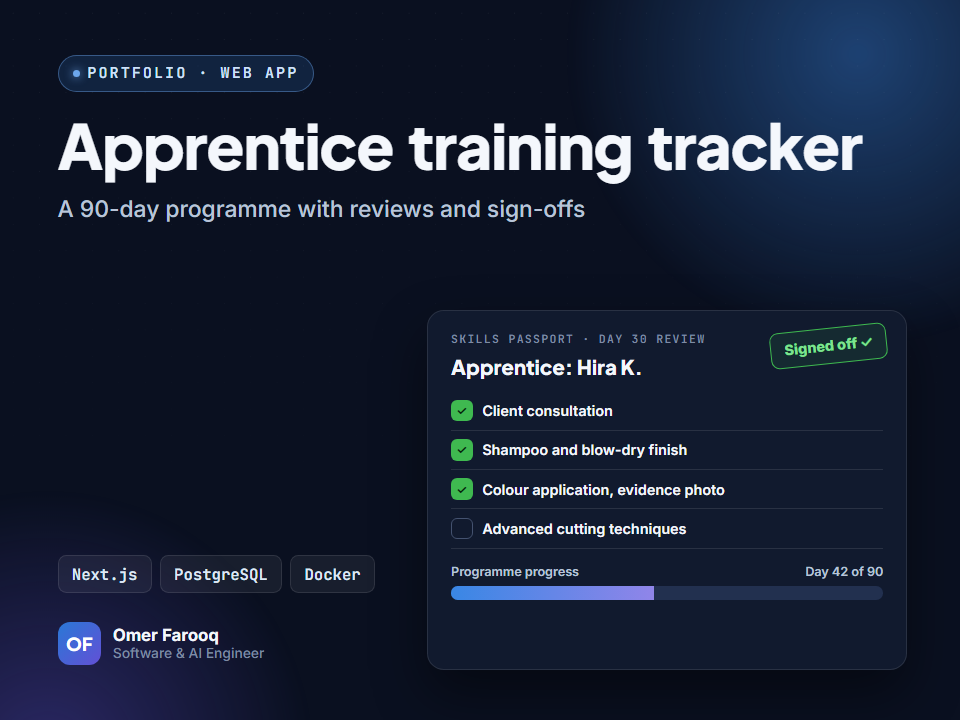
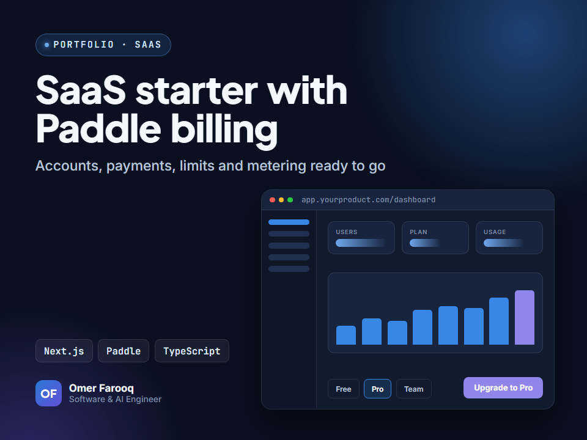
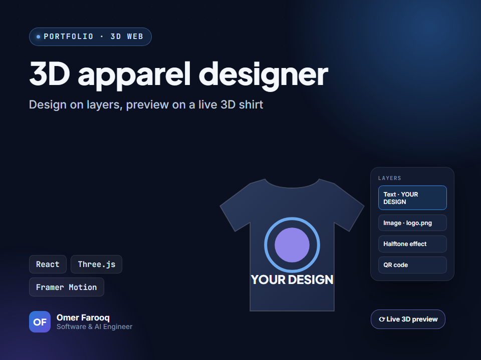

Software & AI Engineer
I build AI agents and the products around them.
From a WhatsApp front desk that answers customers with Claude to full-stack SaaS with payments built in. I take ideas from prototype to production with TypeScript, Python and today's best language models.
5,000+ GitHub contributions, private work included
2,100+ contributions this year
8 projects featured below
2019 building on GitHub since
Selected work
Products I've built
AI products first, then the full-stack platforms behind them. Select a project for details.
All work AI and ML Full-stack 3D and frontend

AI agent
Jawabo: AI WhatsApp front desk
A WhatsApp front desk for clinics, restaurants, academies and salons. Customers message the business and a Claude-powered agent answers from the business's own data. Runs on self-hosted n8n, PostgreSQL and nginx in Docker, with a Next.js site and live demo.
Claude n8n PostgreSQL Docker

Generative AI
Pakka CV: AI CV writer, Urdu to English
Job seekers type their details in Urdu, Roman Urdu or English and get a professional English CV for jobs in the Gulf and Pakistan. Free watermarked preview, edits in plain words, local wallet payments and a Telegram approval flow. Next.js and Claude.
Next.js Claude TypeScript

Document AI
Recruiter AI: chat with résumés
A web app for recruiters: drag in candidate résumés as PDFs and ask about skills, experience and fit in plain language. Google Gemini reads the documents and answers in a chat interface. Built with Next.js, TypeScript and MongoDB.
Gemini Next.js MongoDB

ML service
Background-removal API
An image API that removes backgrounds in one request. Built in Python with FastAPI and rembg, plus a PyTorch and Hugging Face Transformers version for higher-quality cut-outs, packaged as Docker containers ready to deploy.
Python FastAPI PyTorch Docker

Full-stack
Sports community platform
A sports community with a Next.js web app, an Expo mobile app and an admin panel. Members get a feed, profiles and paid membership tiers; admins manage users, tiers and activity. Express and Prisma API on PostgreSQL, Stripe billing, two-language UI.
Next.js Expo Prisma Stripe

Web app
Apprentice training tracker
A web app that runs a salon group's 90-day apprentice programme: daily service logs, weekly reviews, skills-passport sign-offs with photo and PDF evidence, and the final readiness decision. One Next.js app with PostgreSQL, deployed with Docker.
Next.js PostgreSQL Docker

SaaS
SaaS starter with Paddle billing
A production-ready Next.js starter for paid web apps: accounts, Paddle payments as Merchant of Record, free-tier limits, usage metering, transactional emails, legal pages and a landing page. Includes a complete example product, a QR code tool.
Next.js Paddle TypeScript

3D web
3D apparel designer
A browser-based apparel designer: customers add text, images, halftone effects and QR codes on layers, then check the result on a live 3D shirt before ordering. Works on desktop and mobile with undo and redo. React, Three.js, Framer Motion, Zustand.
React Three.js Framer Motion
Services
What I can build for you
Fixed-scope projects with clear deliverables. Tell me what you need and I'll reply with a plan, a timeline and a quote.
AI agent
AI agent for WhatsApp or your website
Answers customers 24/7 from your own information.
Captures bookings, orders or leads into Google Sheets or your CRM Two languages, for example English and Urdu Daily summary for the owner
Automation
n8n AI automation that saves hours
Connect your apps, let AI sort, summarise and draft.
Up to 3 workflows AI steps with Claude or GPT Error handling and failure alerts
Document AI
AI document data extraction
PDFs, scans, CVs and invoices into clean data.
Up to 3 document types OCR for scans and photos Validation rules
SaaS MVP
Next.js SaaS MVP, ready to sell
Login, subscriptions, emails and an admin panel.
Stripe or Paddle subscriptions User dashboard Transactional emails
AI integration
AI features in your existing app
Claude, GPT or Gemini wired into your backend.
Up to 3 AI features Streaming responses Prompt templates you can edit
Scope and quote We agree on what to build, the milestones and a fixed price or time estimate before any code. Build in the open You get regular updates with a working demo you can click, not just status messages. Ship and hand over Clean, documented TypeScript or Python, deployed to your accounts, with notes on how it works. Stay honest If something won't work, you hear it early, with an alternative that will.
Languages TypeScript JavaScript Python SQL Bash
AI and ML Claude OpenAI Gemini LangChain Vertex AI PyTorch Hugging Face Ollama
Automation n8n BullMQ Puppeteer Webhooks Telegram bots
Frontend React Next.js React Native Expo Tailwind CSS Three.js Framer Motion
Backend Node.js NestJS Express FastAPI Flask Prisma Socket.io
Data and cloud PostgreSQL MongoDB Redis Firebase Docker AWS Google Cloud Vercel
Live from GitHub
Shipping every week
Most of my work happens in private client repositories. These cards are regenerated from my contribution data twice a day.
See the full profile on GitHub →